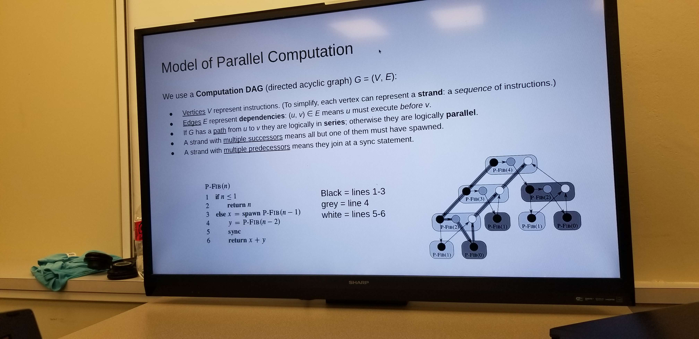

In my early life I was consistently influenced by the digital world. Playing video games on a daily basis, while interacting with the internet and watching videos. The digital realm was a large part of my life, although we grew up poor, I was constantly around technology. I however never considered a field within software engineering until a fateful day in High school.
I accidentally took a class called STEM, which introduced me to HTML, CSS, & Javascript. Playing and fiddling around with code in class made me realize that coding was so much more than just typing magic words onto a screen. It required constant problem solving, cognitive, and imaginative thinking.
Coding seemed endless and in class we would consistently code athletically and create small websites that utilizes complex Javascript algorithms. This sparked an even larger interest within software engineering as I continued to develop with age. I realized that problem solving was unbelievably fluid within the coding field and with my ever growing interest with the world and environment, I also realized that coding and software development can be found in almost every field I found intriguing.
Going through college opened my eyes to the development world. As an ignorant high schooler I believe that I was more than prepared for the vas world of coding, but as I trekked through each class and requirement, I became less and less ignorant to the tools and programs around me.
Each class, although repeating the same fundamentals of coding, offered something new. I learned of different IDEs, frameworks, coding strategies, and problem solving techniques. This made coding even more intimidating and interesting than I already saw it, but it never deterred me from my path. Coding was a large combination of many passions and interests in my life.
Also being apart of such a large community for programming at the university level allows me to join clubs and interact with my peers. One of the clubs I actively took part in recently was Pandas. A club that trains students and prepares them for coding interviews by providing coding problems that we must solve. As we slice through each problem the next problem also increases in difficulty and complexity.
The club made me realize that certain fields within the programming world must have complex problem solvers. Although many jobs don’t require this type of problem solving on a daily basis, if I were to ever code anything that involves human lives, the complexity of the code and correctness must matter to me.

Reflecting on everything I have been through and learned on my journey makes me think that I made the right decision on the profession I wanted to master. However, even after all this time I am still figuring out which direction I want to branch off into. With recent creations such as Midjourney AI and ChatGPT it makes me wonder if I should begin leaning into neural networks and machine learning to hopefully aid in propelling the world forward into a technological renaissance.
As I continue growing and learning I’m sure a decision as significant as job choice will become easier and easier. As of right now, I believe I’ll continue being open minded to the different fields and careers that programming affects.